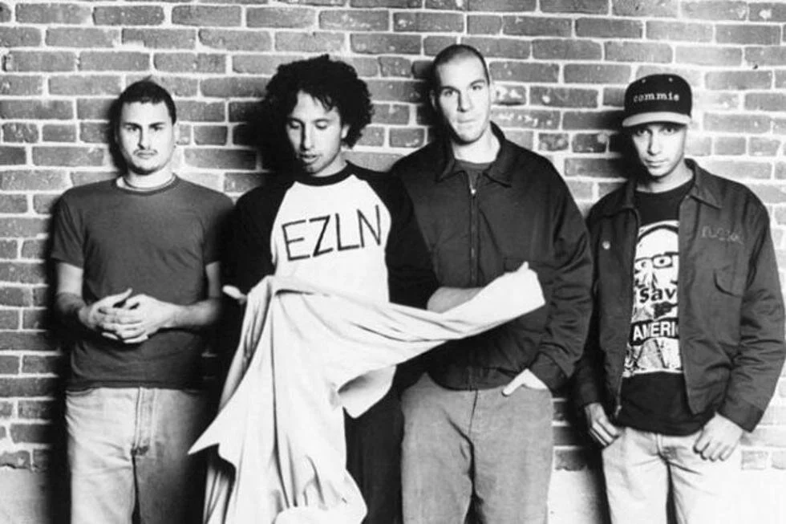

Biografía
Rage Against the Machine es una banda estadounidense formada en Los Ángeles en 1991. Su música combina el rap, el metal, el punk y el funk, convirtiéndolos en pioneros del rap metal. Su lírica se caracteriza por un fuerte contenido político y social.
Obras Clave
La discografía de Rage Against the Machine es relativamente corta, pero influyente en la música y la protesta social.
- 1992: Rage Against the Machine (álbum debut)
- 1996: Evil Empire
- 1999: The Battle of Los Angeles
- 2000: Renegades


Canciones Destacadas
A continuación, una tabla con 3 de las canciones más destacables de Rage Against the Machine.
| # | Nombre de la Canción | Reproductor |
|---|---|---|
| 1 | Killing in the Name | |
| 2 | People of the Sun | |
| 3 | Wake Up |
Videos Destacados
A continuación, dos videos de Rage Against the Machine incrustados desde Vimeo:
Legado
La banda dejó una huella profunda en la música, la cultura y la política, influenciando a generaciones de artistas y activistas.
- Introdujeron la fusión entre rap y metal con un enfoque crítico.
- Inspiraron a músicos y movimientos sociales con sus letras.
- Fueron incluidos en el Rock and Roll Hall of Fame en 2023.
Para más información, puedes consultar: Sitio Oficial o su página en Wikipedia.